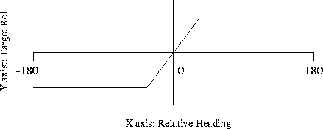

AboutHomeIntroduction Overview Features Screenshots DownloadsDownload ProgramDownload Scenery Download Source Code FlightGear CD's FTP Mirrors SupportVersion SummaryHardware Requirements Documentation Places to Fly Mailing Lists & Forums FAQ LinksRelated WebsitesRelated Projects ContributeContributingCVS Resources Goals Contributors Design Proposals Events |
Flight Gear Autopilot: Heading Hold Module
Jeff Goeke-Smith
1. Heading HoldThe first autopilot system implemented was a heading hold system. The entire point of the system was to hold a single heading by using the ailerons only. Currently the system does not use the rudder for heading or side slip control. The system of determining how to control the ailerons is a fuzzy logic system ( at least according to the book I borrowed from the local library) . The first stage of the autopilot system determines the relative heading by comparing the current heading to the target heading. This step allows me to determine what direction I should turn.

The next step determines how far I should be rolled and in what direction. By luck, or maybe by design, If I want to move to a negative relative heading, I need to have a negative roll. And by even more luck, To roll in a negative direction, I need to add negative aileron. Figure 1 shows how I determine how far I should be rolled. The x-axis represents the relative heading. The y-axis represents the Target Roll. The specific values where the graph changes slope is determined by a series of variables in the Autopilot Structure. Now that the we know how far the aircraft should be rolled, we now determine the Relative roll. This being the current roll compared to the target roll. Now that we know how far we need to roll, we employ a near identical copy of the above routine to determine where the aileron should be by using the x-axis to represent the relative roll and the y-axis being the aileron setting. The system then sets the aileron to that setting and finishes the procedure. If anyone who reads this is interested in more information on how I built this system, feel free to e-mail me at jgoeke@voyager.net or read the code yourself.
About this document ...
Flight Gear Autopilot: This document was generated using the LaTeX2HTML translator Version 96.1 (Feb 5, 1996) Copyright © 1993, 1994, 1995, 1996, Nikos Drakos, Computer Based Learning Unit, University of Leeds. The command line arguments were: The translation was initiated by Curtis L. Olson on Thu Oct 1 21:39:49 CDT 1998 Curtis L. Olson Thu Oct 1 21:39:49 CDT 1998 |